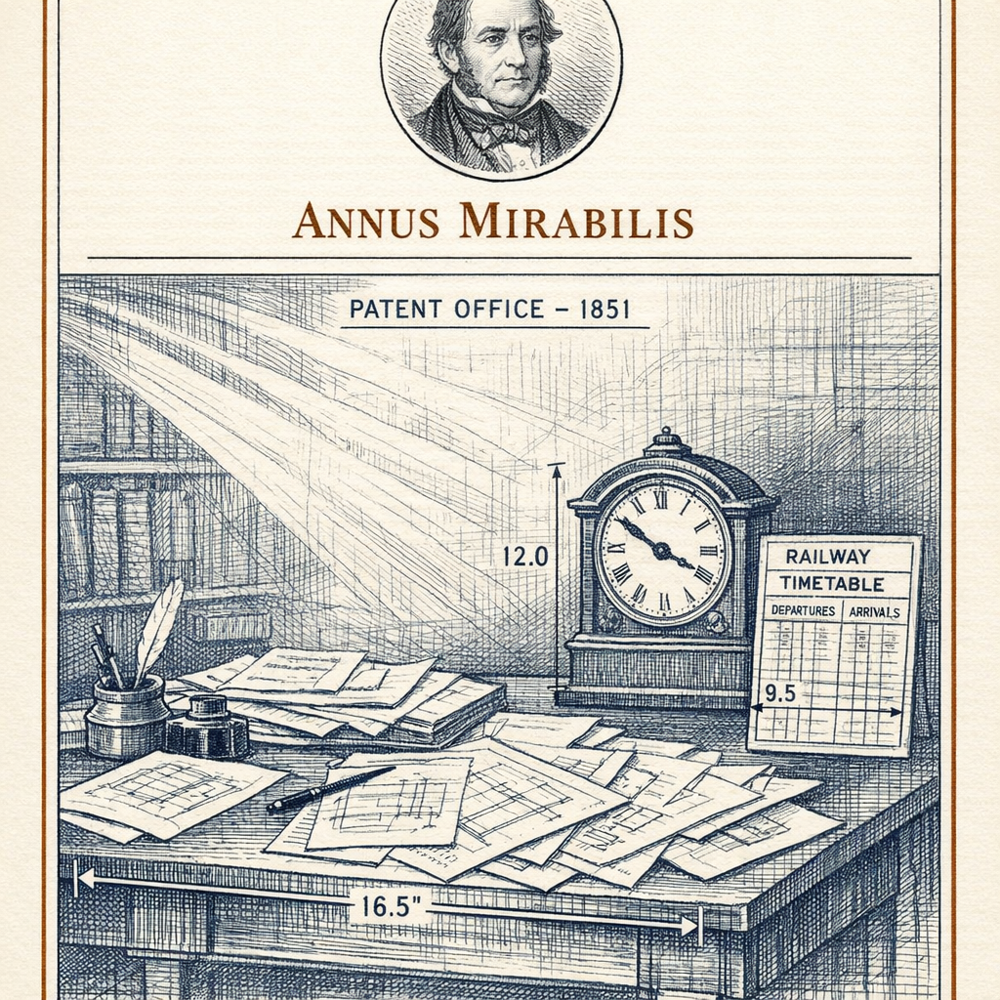
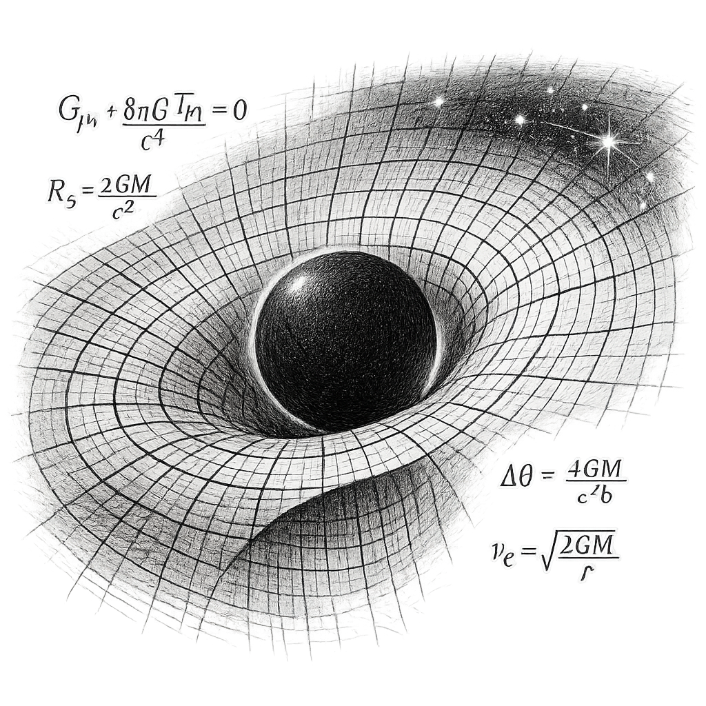
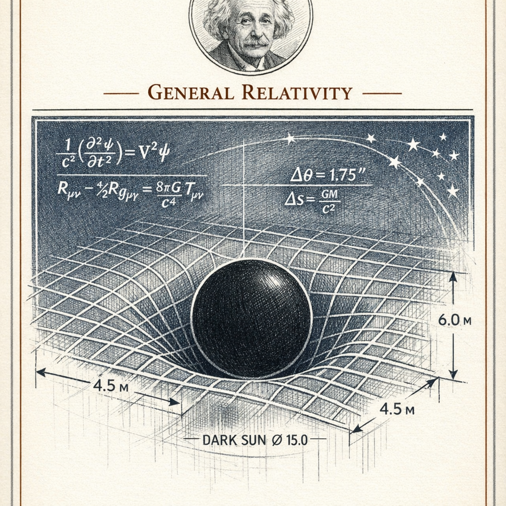
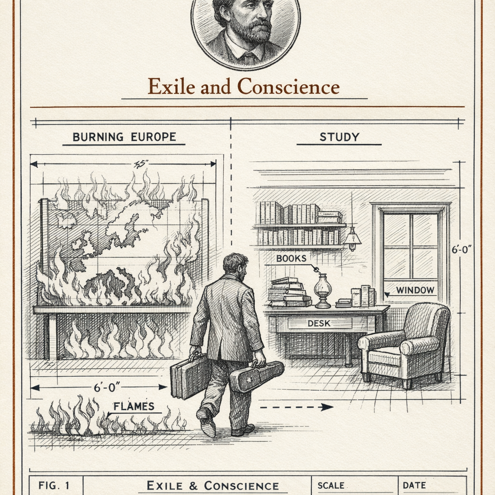
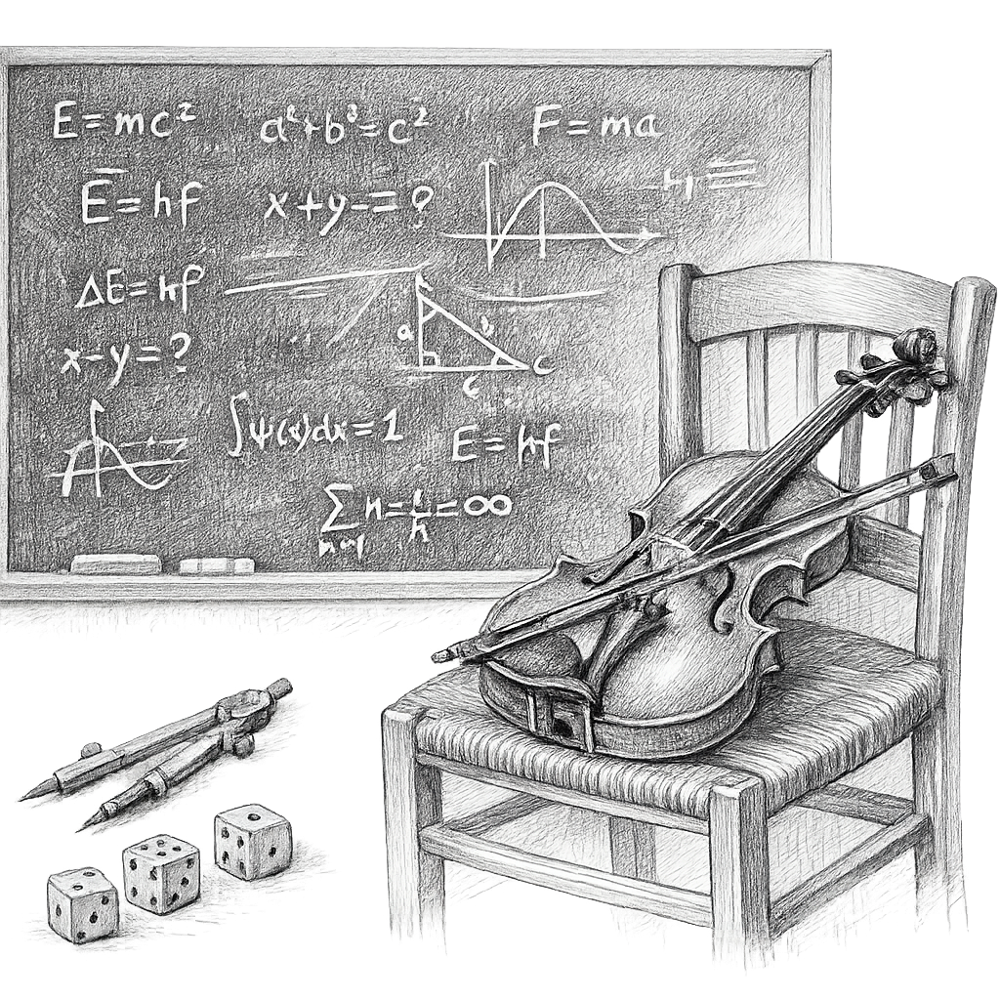
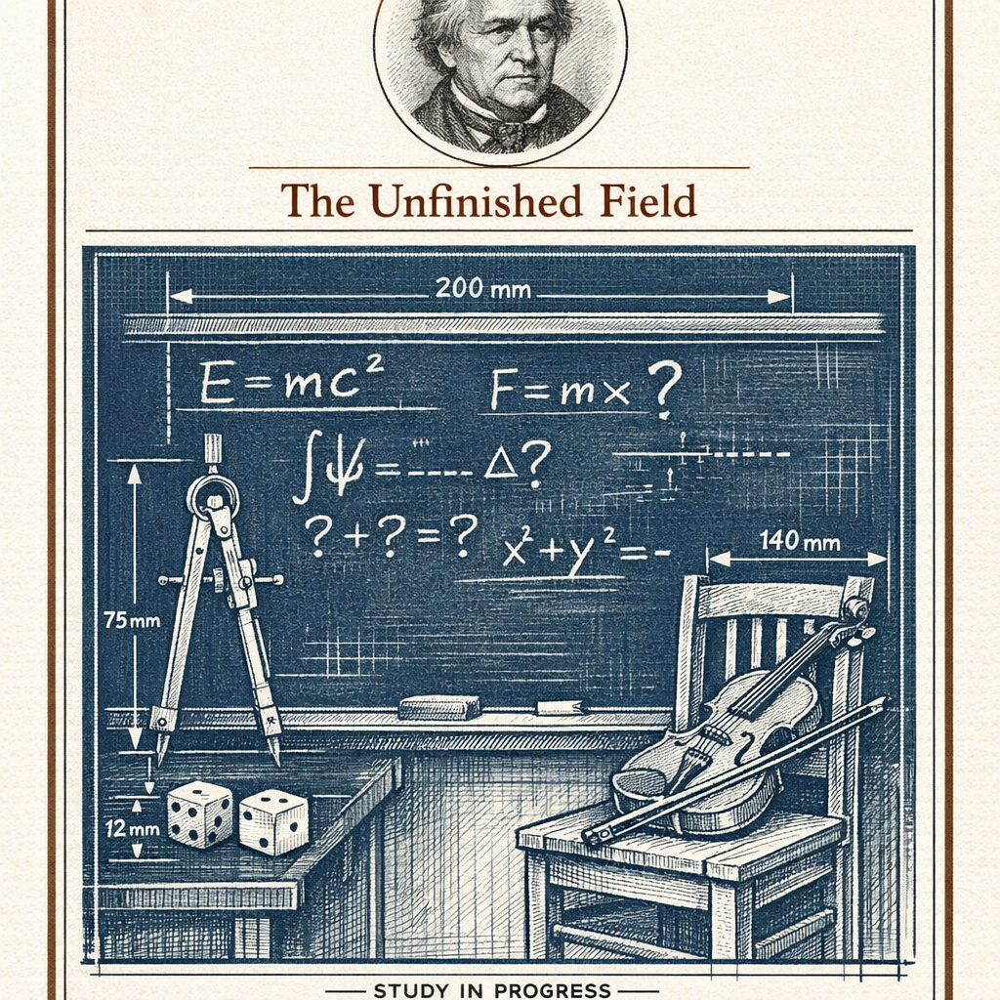

I am born in Ulm, in the Kingdom of Württemberg, on the fourteenth of March, 1879. A subject of an empire that expects certain things of me. I disappoint most of them early.
I am not a prodigy in the way people later imagine. I am slow to speak. I question what the schoolroom insists I accept. In 1895 I go to Switzerland. The following year I give up my German citizenship — the first time I walk away from a country, though not the last.
At seventeen I enroll at the polytechnic in Zurich to become a teacher of mathematics and physics. I graduate in 1900. No university wants me. So I take a desk at the patent office in Bern, examining other men's inventions.
It is the best thing that could have happened to me.
I do my most radical thinking as a clerk, with a clock on the wall and a train timetable in my head.
In 1905 I publish four papers. Light behaves as particles. Molecules jostle a grain of pollen into visible dance. Time and simultaneity are not what anyone assumed. And mass and energy are the same thing wearing different clothes: E equals mc squared. I submit my doctoral dissertation to the University of Zurich the same year.
Ten years later I finish the harder work. Gravity is not a force pulling across empty space. It is the shape of space and time itself, curved by whatever fills it. In 1915 I present the field equations. In 1919, when starlight bends around the eclipsed sun exactly as I predict, my name leaves the seminar rooms and enters the newspapers. I become something I never asked to be: a public figure.
In 1921 I receive the Nobel Prize — not for relativity, which the committee finds too controversial, but for the photoelectric effect. I take it. Vindication rarely arrives in the shape you expect.
In 1914 I had returned to Berlin, to the Prussian Academy, becoming German again. In 1933, while I am visiting America, Hitler takes power. I decide not to go back. I am a Jew, and I have watched what is coming for long enough. I settle at Princeton. In 1940 I become an American.
In 1939 I sign a letter to President Roosevelt, warning that Germany might build an atomic weapon. It is the most consequential signature of my life, and I come to regret its harvest. I spend the atomic age arguing against the very fire I helped light — for peace, for civil rights, for world government, for the maturity that power demands and so rarely earns.
In my last decades I quarrel with the physics I helped create. I refuse to believe that chance sits at the bottom of nature. I chase a unified field theory that never comes. I grow isolated. I do not mind, entirely. Some questions are worth being wrong about for a very long time.
I die in Princeton on the eighteenth of April, 1955, with equations unfinished on the page beside me.
- On the Photoelectric Effect 1905 Light as discrete quanta; the paper that later earns me the Nobel Prize.
- On Brownian Motion 1905 The random jitter of suspended particles as proof that atoms and molecules are real.
- On the Electrodynamics of Moving Bodies 1905 The special theory of relativity; simultaneity, time, and light rebuilt.
- Does the Inertia of a Body Depend on Its Energy Content? 1905 Mass and energy shown to be equivalent — E = mc².
- The Field Equations of Gravitation 1915 General relativity; gravity reimagined as the curvature of spacetime.
- Cosmological Considerations in General Relativity 1917 The universe modeled as a whole; introduces the cosmological constant.
- On the Quantum Theory of Radiation 1917 Spontaneous and stimulated emission — the seed of the laser and maser.
- The Einstein–Szilard Letter 1939 A warning to Roosevelt on the possibility of a German atomic bomb.
Annus Mirabilis

People imagine I do this work in some tower of pure thought. I do it in a patent office. Between applications for electrical timing devices and coupled clocks, I think about what it would mean to ride alongside a beam of light.
The examiner's discipline serves me. All day I ask of an invention: what does it actually do, mechanically, honestly, stripped of the inventor's flattery? I ask the same of the universe. What does a clock truly measure? What does it mean to say two events happen at once?
I have no laboratory. My instruments are trains, lightning, moving rulers, and a pencil. I take a coffee, I take a walk, I take these ordinary objects to the edge of what they can bear. The papers arrive in a rush, four in one year, and I am twenty-six and mostly unknown.
General Relativity


Special relativity leaves me uneasy. It treats uniform motion, but not acceleration, not gravity. And I have what I later call the happiest thought of my life: a person falling freely does not feel their own weight. Gravity and acceleration are, locally, the same thing.
It takes me eight years to turn that thought into mathematics. I need geometry I do not know. I struggle, I make errors, I abandon a version and return to it. This is not the swift 1905 rush. This is grinding, patient, humiliating labor.
In 1915 the field equations close. Matter tells spacetime how to curve; curved spacetime tells matter how to move. Then in 1919 they photograph an eclipse, and the stars near the sun sit exactly where my curved space says they must. Overnight I am no longer a physicist. I am a headline.
Exile and Conscience

I am abroad when Hitler takes power in 1933. I understand at once that I will not go home. My property is seized, my name blacklisted, my science denounced as "Jewish." I settle at Princeton, a refugee with a desk and a reputation.
In 1939 I lend my signature to a warning: Germany might build a weapon from the very equation that made me famous. I fear that fire in the wrong hands more than I fear the fire itself. So I sign.
Then I watch what the fire does. And I spend my remaining years insisting that a nation cannot buy safety with physics alone — that security without political maturity is a trap, and that peace, civil rights, and some form of world governance are not idealism but arithmetic. I speak for the persecuted because I have been one.
The Unfinished Field


I help build the quantum theory, and then I refuse to be at peace with it. Not because the mathematics fails — it succeeds embarrassingly well — but because it asks me to accept that chance sits at the foundation of the world. I do not believe nature rolls dice in secret.
Niels Bohr and I argue for years, in conference halls and in print. He is generous, formidable, and, most of history now says, right. I invent thought experiments to trap the theory; he escapes them. I lose these debates. I do not stop.
Meanwhile I hunt for a unified field theory — one geometry that would hold gravity and electromagnetism together, the way general relativity held space and time. I never find it. I grow separate from the young physicists who have moved on. I accept the isolation. To me it is the honest cost of trying to keep the universe intelligible in a single piece.
Some questions are worth being wrong about for a very long time.
God does not play dice.
I gave the world an equation and could not take it back. The clerk who imagined riding a beam of light did not know he was lighting a fuse.
They call me the mind of the century. I would settle for having kept the universe in one piece — and I did not manage even that.
I leave the equations open on the page. I never unite the fields. I never reconcile with the dice.
I still do not believe the universe is built on chance. But I am no longer here to argue it, and the young ones have gone on without me.
Whether nature is, at its foundation, intelligible in a single piece — that question outlives me. I hand it forward, unanswered.